먼저 생각해 보세요.
Die Mauer wurde gebaut. 이 문장에서 알 수 없는 것은 무엇인가요?
Passiv 문장은 누가 했는지 말하지 않고 무슨 일이 일어났는지를 말해요.
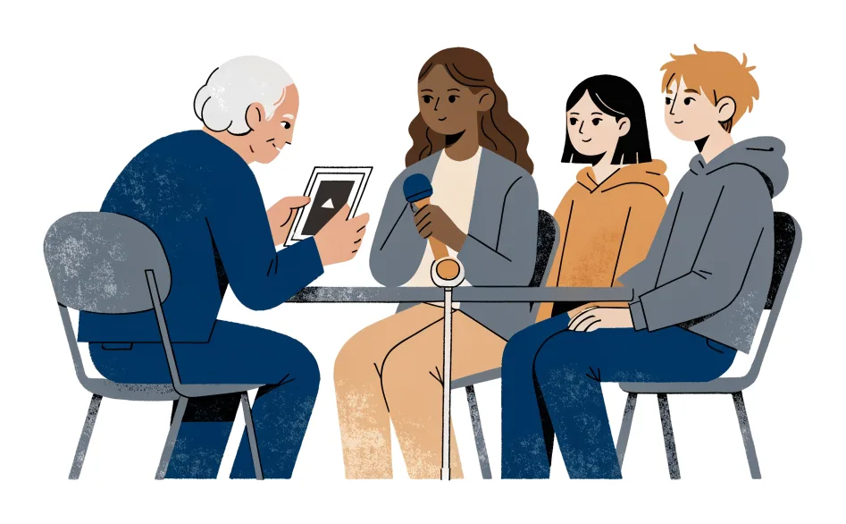
6월 말이에요. 팟캐스트 팀이 「Gestern und heute」라는 주제로 지난 시대를 겪은 사람들을 만나요. Herr Krause는 독일이 둘로 나뉘어 있던 때를, Elif의 할머니는 터키에서 독일로 온 때를 이야기해요.
눌러서 들어 보세요.
먼저 생각해 보세요.
Die Mauer wurde gebaut. 이 문장에서 알 수 없는 것은 무엇인가요?
Passiv 문장은 누가 했는지 말하지 않고 무슨 일이 일어났는지를 말해요.
Lektion 4의 낱말 다섯 개를 다시 떠올려 보세요.
문법 Passiv Perfekt und Präteritum 정리, damals, seitdem, im Jahr 1989, als, nachdem 복습
이 과를 마치면 독일의 분단과 통일을 이해하고, 사회가 어떻게 변했는지 전하고, 이주와 다양성에 대해 말할 수 있어요.
팟캐스트 팀이 Lukas의 이웃 Herr Krause를 학교에 모셨어요.
들으면서 찾아보세요. Herr Krause의 여동생은 어디에 살았나요?
다음 날, Elif가 집에서 할머니를 인터뷰해요. Yuna와 Emma도 함께 왔어요.
들으면서 찾아보세요. Elif의 할아버지는 독일에서 무슨 일을 했나요?
두 대화를 듣고 답하세요.
Wann wurde die Mauer gebaut?
Wo wohnte Herrn Krauses Schwester?
Die Mauer stand achtundzwanzig Jahre.
Was ist am 9. November 1989 passiert?
Wo hat Elifs Opa gearbeitet?
Elifs Oma konnte am Anfang gut Deutsch.
Sie konnte kein Deutsch.
Elif의 할머니는 독일어를 어떻게 배웠나요?
낱말 33개예요. 낱말이나 예문 앞의 단추를 누르면 소리가 나요. 명사는 der, die, das를 색으로 구분했어요.
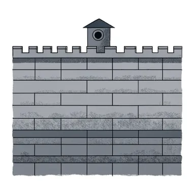
die Mauer, die Mauern 장벽, 담
Die Mauer stand achtundzwanzig Jahre.장벽은 28년 동안 서 있었어요.
der Krieg, die Kriege 전쟁
Im Krieg sind viele Menschen gestorben.전쟁에서 많은 사람이 죽었어요.
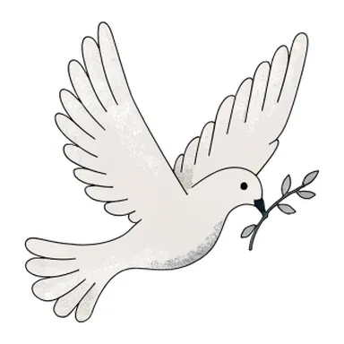
der Frieden 평화
Alle Menschen wünschen sich Frieden.모든 사람이 평화를 바라요.
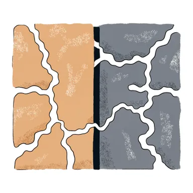
die Teilung 분단, 나뉨
Die Teilung dauerte mehr als vierzig Jahre.분단은 40년 넘게 이어졌어요.
die Einheit 통일, 하나 됨
Am dritten Oktober feiert Deutschland die Einheit.10월 3일에 독일은 통일을 축하해요.
die Wiedervereinigung 다시 하나가 됨, 재통일
Die Wiedervereinigung war ein großes Fest.재통일은 큰 잔치였어요.
der Staat, die Staaten 국가
Es gab zwei deutsche Staaten.독일이라는 나라가 둘 있었어요.
die Regierung, die Regierungen 정부
Die Regierung sitzt in Berlin.정부는 베를린에 있어요.
die Freiheit 자유
Die Menschen demonstrierten für Freiheit.사람들은 자유를 바라며 시위했어요.
fliehen, ist geflohen 달아나다, 탈출하다
Viele Menschen sind in den Westen geflohen.많은 사람이 서쪽으로 탈출했어요.
der Bürger, die Bürger 시민
Die Bürger gingen auf die Straße.시민들이 거리로 나갔어요.
die Vergangenheit 과거
Wir lernen aus der Vergangenheit.우리는 과거에서 배워요.
die Gegenwart 현재
Die Geschichte hilft uns, die Gegenwart zu verstehen.역사는 지금을 이해하게 도와줘요.
das Ereignis, die Ereignisse 사건, 일어난 일
Das war ein großes Ereignis.그건 큰 사건이었어요.
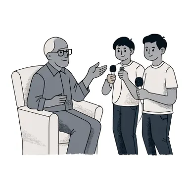
der Zeitzeuge, die Zeitzeugen 그 시대를 겪은 증인
Herr Krause ist ein Zeitzeuge.Krause 씨는 그 시대를 겪은 증인이에요.
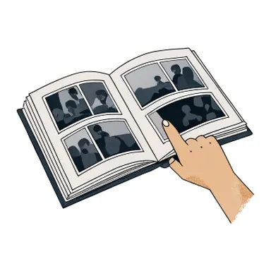
die Erinnerung, die Erinnerungen 기억, 추억
Ich habe schöne Erinnerungen an diese Zeit.나는 그때의 좋은 기억이 있어요.
das Jahrzehnt, die Jahrzehnte 10년
Vier Jahrzehnte lang war Deutschland geteilt.독일은 40년 동안 나뉘어 있었어요.
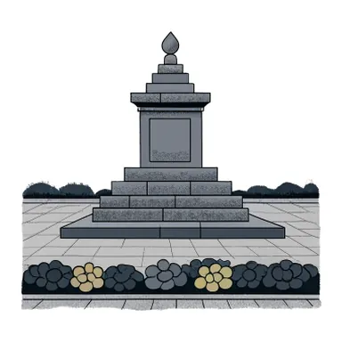
das Denkmal, die Denkmäler 기념물
An der alten Grenze steht heute ein Denkmal.옛 국경에는 지금 기념물이 서 있어요.
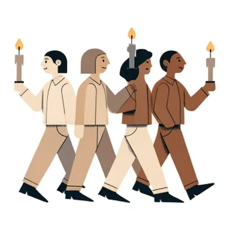
friedlich 평화로운
Die Demonstration war friedlich.시위는 평화로웠어요.
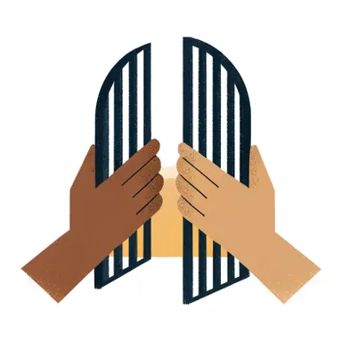
öffnen, hat geöffnet 열다
Am neunten November wurde die Grenze geöffnet.11월 9일에 국경이 열렸어요.
fallen, ist gefallen (du fällst, er fällt) 떨어지다, 무너지다
Die Mauer ist im November gefallen.장벽은 11월에 무너졌어요.
gründen, hat gegründet 세우다, 창립하다
Die Schule wurde vor hundert Jahren gegründet.그 학교는 백 년 전에 세워졌어요.
die Gesellschaft, die Gesellschaften 사회
Die Gesellschaft hat sich verändert.사회가 달라졌어요.
die Migration 이주
Migration gibt es in jedem Land.이주는 어느 나라에나 있어요.
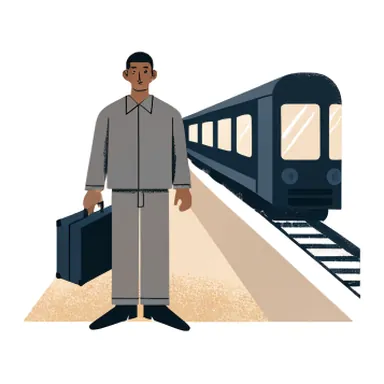
einwandern, ist eingewandert 이민 오다
Mein Opa ist aus der Türkei eingewandert.우리 할아버지는 터키에서 이민 오셨어요.
auswandern, ist ausgewandert 이민 가다
Viele Deutsche sind nach Amerika ausgewandert.많은 독일 사람이 미국으로 이민 갔어요.
der Gastarbeiter, die Gastarbeiter 다른 나라에서 일하러 온 노동자
Mein Opa kam als Gastarbeiter nach Köln.우리 할아버지는 일하러 쾰른에 오셨어요.
die Herkunft 출신
Die Herkunft eines Menschen ist nicht wichtig.사람이 어디 출신인지는 중요하지 않아요.
die Heimat 고향
Köln ist meine zweite Heimat.쾰른은 내 둘째 고향이에요.
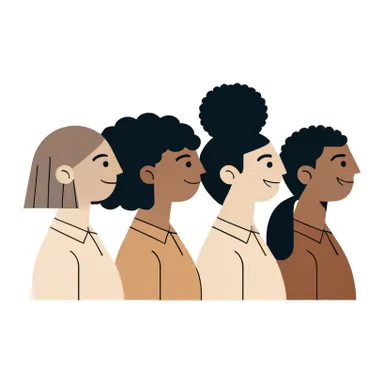
die Vielfalt 다양성
Die Vielfalt macht unsere Klasse stark.다양성이 우리 반을 튼튼하게 해요.
das Vorurteil, die Vorurteile 편견
Vorurteile sind oft falsch.편견은 틀릴 때가 많아요.
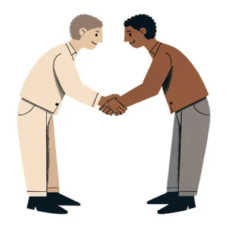
der Respekt 존중
Jeder Mensch verdient Respekt.사람은 누구나 존중받아야 해요.
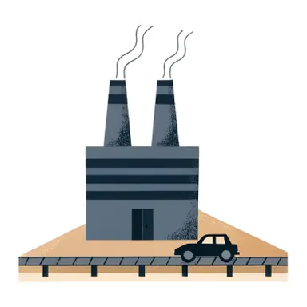
die Fabrik, die Fabriken 공장
In der Fabrik werden Autos gebaut.그 공장에서는 자동차를 만들어요.
이 과의 낱말로 여덟 문제를 풀어요.
예문을 보고 답해 보세요.
Die Grenzen … geöffnet. 빈칸에 알맞은 말은 무엇인가요?
규칙
역사를 이야기할 때는 누가 했는지보다 무슨 일이 일어났는지가 중요해요. 그래서 Passiv를 자주 써요. 지난 일은 wurde나 wurden에 과거분사를 붙여요.
| Aktiv | Passiv Präteritum |
|---|---|
| Man baute die Mauer. | Die Mauer wurde gebaut. |
| Man öffnete die Grenzen. | Die Grenzen wurden geöffnet. |
주의 주어가 하나면 wurde, 여럿이면 wurden이에요.
예문을 보고 답해 보세요.
Die Mauer ist gebaut worden. 맨 끝에 오는 말은 무엇인가요?
규칙
Passiv의 Perfekt는 sein에 과거분사와 worden을 붙여요. 뜻은 Passiv Präteritum과 같고, 말할 때 자주 써요.
| Passiv | |
|---|---|
| Präsens | Die Grenze wird geöffnet. |
| Präteritum | Die Grenze wurde geöffnet. |
| Perfekt | Die Grenze ist geöffnet worden. |
주의 geworden은 '~이 되었다'라는 뜻이에요. Köln ist meine Heimat geworden. Passiv에서는 ge-를 빼고 worden만 써요.
예문을 보고 답해 보세요.
… fiel die Mauer. 빈칸에 쓸 수 없는 말은 무엇인가요?
규칙
지난 일을 차례대로 말할 때 쓰는 말이에요. als는 지난 때에 한 번 있었던 일, nachdem은 그보다 먼저 있었던 일, damals는 '그때', seitdem은 '그때부터 지금까지'를 뜻해요.
| 보기 | |
|---|---|
| damals | Damals gab es zwei deutsche Staaten. |
| als | Als die Mauer fiel, war ich ein Kind. |
| nachdem | Nachdem die Grenze geöffnet worden war, kam meine Schwester. |
| seitdem | Seitdem ist Deutschland wieder ein Land. |
주의 독일어에서는 연도 앞에 in을 쓰지 않아요. 1989 fiel die Mauer 또는 Im Jahr 1989 fiel die Mauer라고 해요.
Yuna가 친구들에게 한국 이야기를 해요. 듣고 답하세요.
Yuna erzählt von Korea
Yuna Korea ist seit mehr als siebzig Jahren geteilt. Es gibt zwei Staaten: Nordkorea und Südkorea.
Lukas Gibt es dort auch eine Mauer?
Yuna Keine Mauer wie in Berlin. Aber es gibt eine Grenze, über die fast niemand gehen darf.
Emma Können sich die Familien besuchen?
Yuna Fast nie. Viele Familien sind im Krieg getrennt worden und haben sich nie wieder gesehen.
Yuna Deshalb interessiert mich die deutsche Geschichte so sehr. Sie zeigt, dass eine Teilung enden kann.
Wie lange ist Korea schon geteilt?
An der Grenze in Korea steht eine Mauer wie in Berlin.
Es gibt keine Mauer wie in Berlin, aber eine Grenze.
Was ist mit vielen Familien passiert?
Yuna는 왜 독일 역사에 관심이 많나요?
듣고 알맞은 것을 고르세요.
장벽은 몇 년에 세워졌나요?
Die Mauer ist 1961 gebaut worden.
Elif의 할머니는 몇 년에 왔나요?
Mein Opa kam 1969 nach Köln. Meine Oma kam zwei Jahre später.
장벽이 무너졌을 때 Frau Schneider는 어땠나요?
Als die Mauer fiel, war ich noch ein kleines Kind.
Yuna는 언제부터 역사를 많이 배우나요?
Seitdem ich in Deutschland lebe, lerne ich viel über die Geschichte.
베를린 장벽을 설명한 글이에요. 읽고 답하세요.
Die Berliner Mauer
Nach dem Zweiten Weltkrieg wurde Deutschland geteilt. Ab 1949 gab es zwei Staaten: die Bundesrepublik im Westen und die DDR im Osten.
Weil viele Menschen aus der DDR in den Westen flohen, wurde 1961 in Berlin eine Mauer gebaut.
Die Mauer war 155 Kilometer lang. Familien und Freunde wurden über Nacht getrennt.
Im Herbst 1989 demonstrierten immer mehr Menschen friedlich. Am 9. November 1989 wurden die Grenzen geöffnet.
Seit dem 3. Oktober 1990 ist Deutschland wieder ein Land. Heute erinnert in Berlin ein Denkmal an die Mauer.
Seit wann gab es zwei deutsche Staaten?
Warum wurde die Mauer gebaut?
Die Mauer war 155 Kilometer lang.
Was passierte am 9. November 1989?
오늘날 베를린에는 장벽을 기억하는 무엇이 있나요?
9b가 만든 연표예요. 보고 답하세요.
Wichtige Jahre
| Jahr | Was ist passiert? |
|---|---|
| 1949 | zwei deutsche Staaten |
| 1961 | Die Mauer wird gebaut. |
| 1989 | Die Grenze wird geöffnet. |
| 1990 | Deutschland ist wieder ein Land. |
In welchem Jahr wurde die Mauer gebaut?
1989 wurde Deutschland geteilt.
1989년에는 국경이 열렸어요.
Wie viele Jahre stand die Mauer?
Passiv예요. 알맞은 말을 고르세요.
Die Mauer 1961 gebaut.
장벽은 1961년에 세워졌어요.
Die Grenzen 1989 geöffnet.
국경은 1989년에 열렸어요.
Die Mauer ist 1961 gebaut .
장벽은 1961년에 세워졌어요.
Viele Familien getrennt worden.
많은 가족이 헤어지게 됐어요.
Köln ist meine Heimat .
쾰른이 내 고향이 됐어요.
'~이 되었다'는 geworden이에요.
Die Schule ist vor hundert Jahren worden.
그 학교는 백 년 전에 세워졌어요.
때를 나타내는 말이에요. 알맞은 말을 고르세요.
die Mauer fiel, war Herr Krause 46 Jahre alt.
장벽이 무너졌을 때 Krause 씨는 마흔여섯 살이었어요.
gab es zwei deutsche Staaten.
그때는 독일이라는 나라가 둘 있었어요.
1990 wurde Deutschland wieder ein Land. feiert man den dritten Oktober.
1990년에 독일은 다시 한 나라가 됐어요. 그때부터 10월 3일을 기념해요.
1989 fiel die Mauer.
1989년에 장벽이 무너졌어요.
die Grenze geöffnet worden war, kam seine Schwester nach Köln.
국경이 열린 뒤에 그의 여동생이 쾰른에 왔어요.
Oma lebt 1971 in Deutschland.
할머니는 1971년부터 독일에 사세요.
알맞은 낱말을 고르세요.
Nach dem Krieg wünschten sich alle .
전쟁이 끝난 뒤 모두가 평화를 바랐어요.
Die Menschen demonstrierten für .
사람들은 자유를 바라며 시위했어요.
Herr Krause ist ein . Er hat alles selbst erlebt.
Krause 씨는 그 시대를 겪은 증인이에요. 모든 것을 직접 겪었어요.
Mein Opa ist aus der Türkei . Er wollte hier arbeiten.
우리 할아버지는 터키에서 이민 오셨어요. 여기서 일하려고 하셨어요.
Köln ist meine zweite .
쾰른은 내 둘째 고향이에요.
sind oft falsch. Man sollte Menschen zuerst kennenlernen.
편견은 틀릴 때가 많아요. 사람은 먼저 알아 가야 해요.
낱말을 순서대로 눌러 문장을 만드세요.
장벽은 베를린에 세워졌어.
국경이 열렸어.
장벽이 무너졌을 때 나는 아이였어.
그때부터 독일은 다시 한 나라야.
낱말과 뜻을 짝지으세요.
듣고 그대로 써 보세요.
Korea ist seit vielen Jahren geteilt. 한국은 여러 해째 나뉘어 있어.
Köln ist meine Heimat. 쾰른은 내 고향이야.
Die Grenze wurde geöffnet. 국경이 열렸어.
Damals war Deutschland geteilt. 그때 독일은 나뉘어 있었어.
Die Mauer wurde gebaut. 장벽이 세워졌어.
Die Grenze ist geöffnet worden. 국경이 열렸어.
Seitdem ist Deutschland wieder ein Land. 그때부터 독일은 다시 한 나라야.
Früher war das anders. 예전에는 달랐어.
Die Gesellschaft hat sich verändert. 사회가 달라졌어.
Seitdem hat sich viel verändert. 그때부터 많은 것이 달라졌어.
Das ist heute normal. 그건 지금은 당연한 일이야.
Wie war das damals? 그때는 어땠나요?
Wo waren Sie an diesem Tag? 그날 어디에 계셨나요?
Was haben Sie gefühlt? 어떤 마음이셨나요?
Woran erinnern Sie sich? 무엇이 기억나세요?
Meine Großeltern sind eingewandert. 우리 할머니, 할아버지는 이민 오셨어.
Hier ist meine Heimat. 여기가 내 고향이야.
In meiner Klasse gibt es viele Sprachen. 우리 반에는 여러 말이 있어.
Vielfalt macht uns stark. 다양성이 우리를 튼튼하게 해.
대화 A에서 역할을 하나 고르세요. 상대의 말은 음성으로 나오고, 내 차례에는 직접 말해요.
나와 우리 가족의 지난날을 떠올리며 적으세요. 완성된 문장을 소리 내어 읽어 보세요.
Ich wurde in Seoul geboren.
Meine Großeltern lebten in einem Dorf am Meer.
Damals gab es keine Handys.
Seitdem hat sich das Leben verändert.
Ein Ereignis aus der Geschichte
우리나라 역사에서 일어난 일 하나를 골라 독일 친구에게 설명하는 글을 써요. 여덟 문장쯤 써요.
Im Jahr 1945 wurde Korea geteilt. Damals war der Zweite Weltkrieg gerade zu Ende. Seit 1948 gibt es zwei Staaten: Nordkorea und Südkorea. 1950 begann ein Krieg, der drei Jahre dauerte. Viele Familien sind in dieser Zeit getrennt worden. Seitdem darf fast niemand über die Grenze gehen. Jedes Jahr erinnern sich die Menschen an den Krieg. Ich wünschte, Korea wäre wieder ein Land.
다 쓴 뒤에 확인해 보세요.
Ich kann über die Teilung und die Wiedervereinigung Deutschlands sprechen.독일의 분단과 통일을 이야기할 수 있어요.
Ich kann berichten, wie sich die Gesellschaft verändert hat.사회가 어떻게 달라졌는지 전할 수 있어요.
Ich kann über Migration und Vielfalt sprechen.이주와 다양성에 대해 말할 수 있어요.